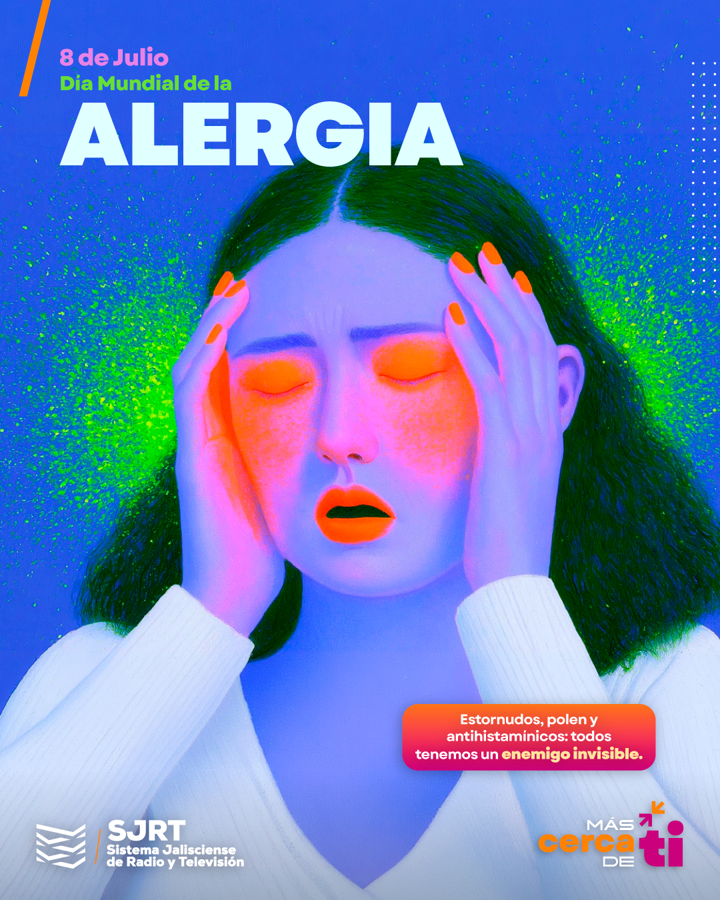
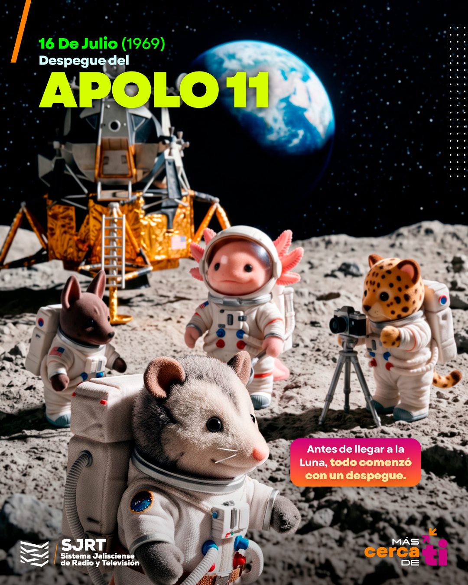
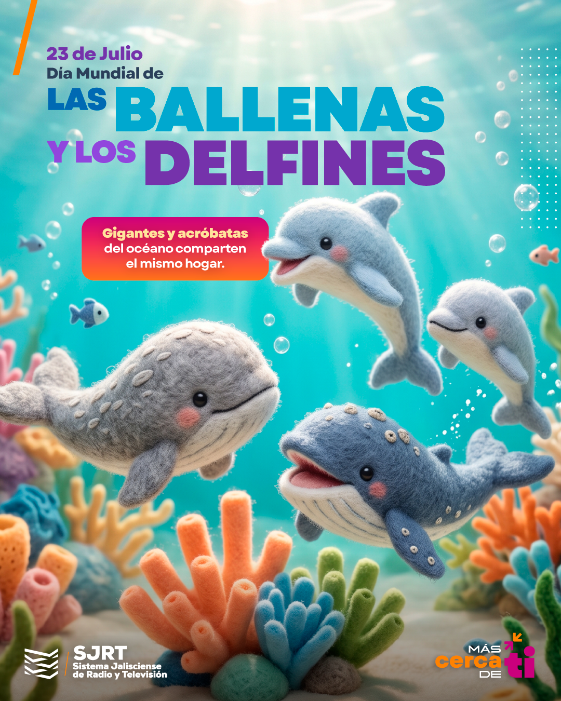
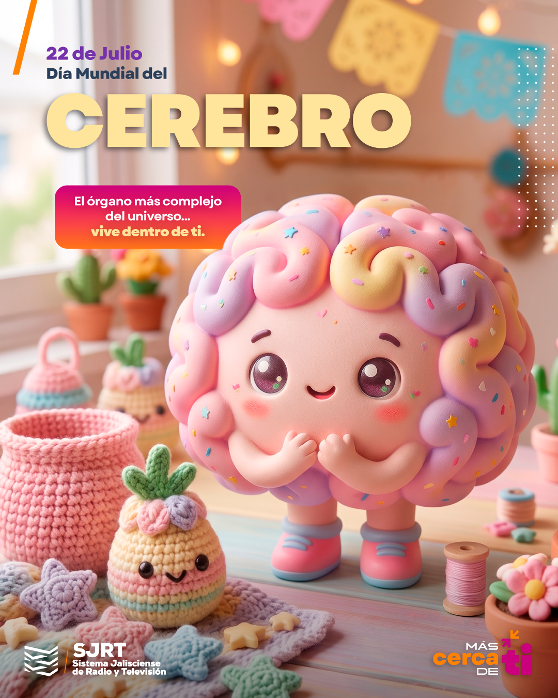
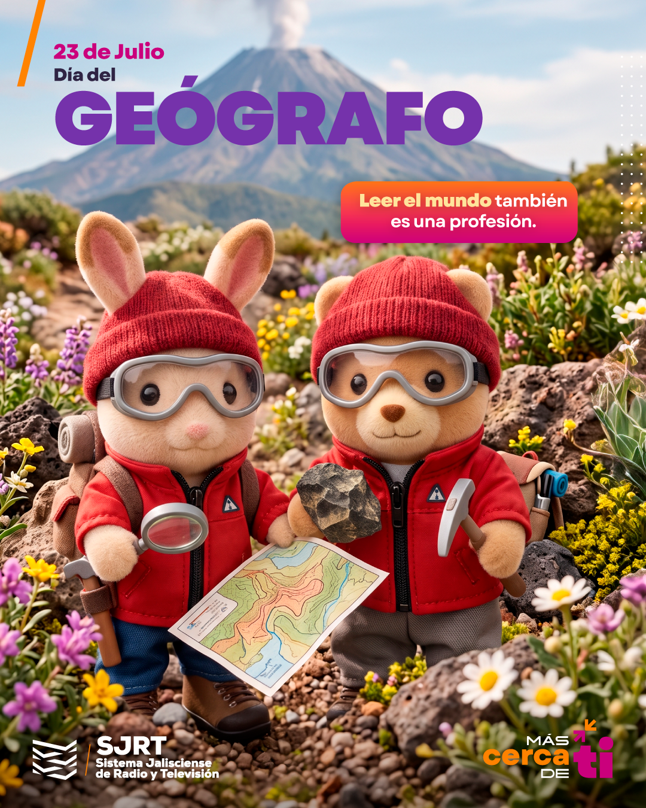
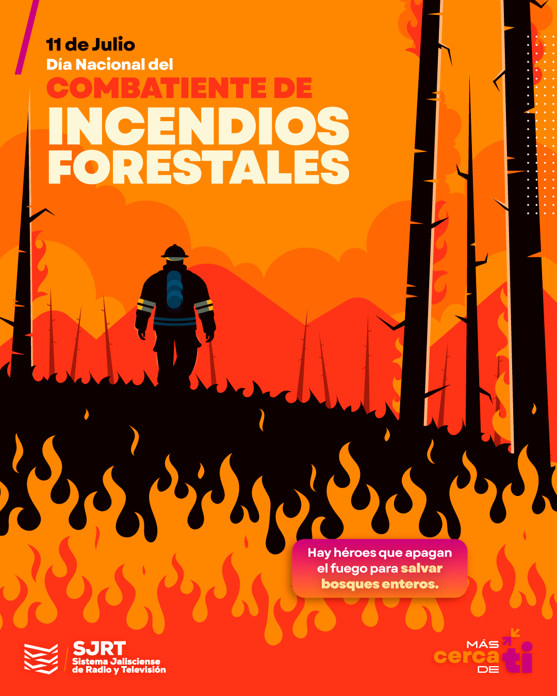
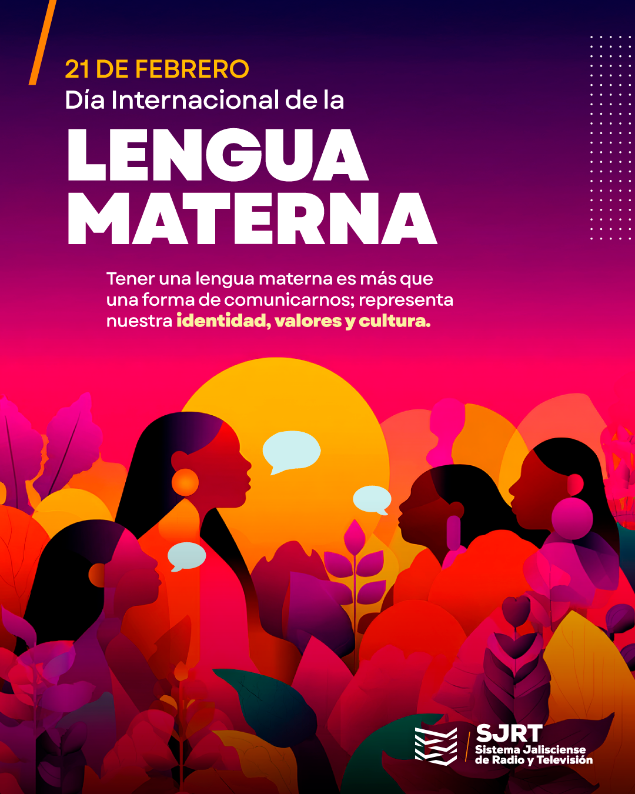
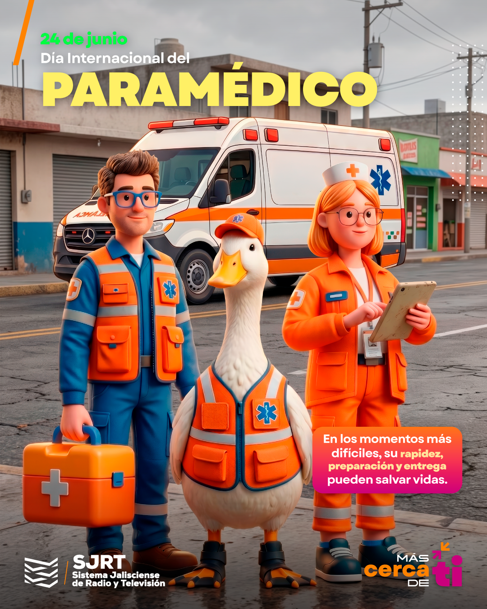
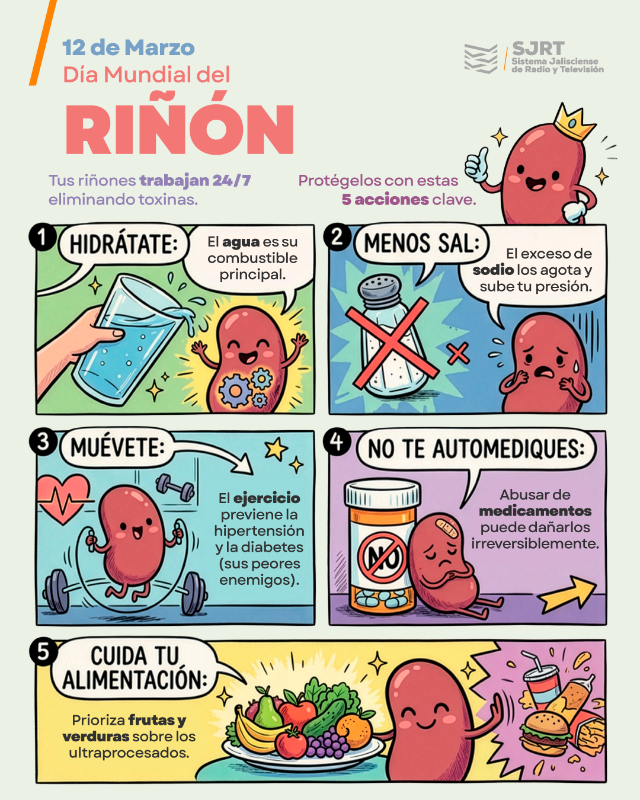
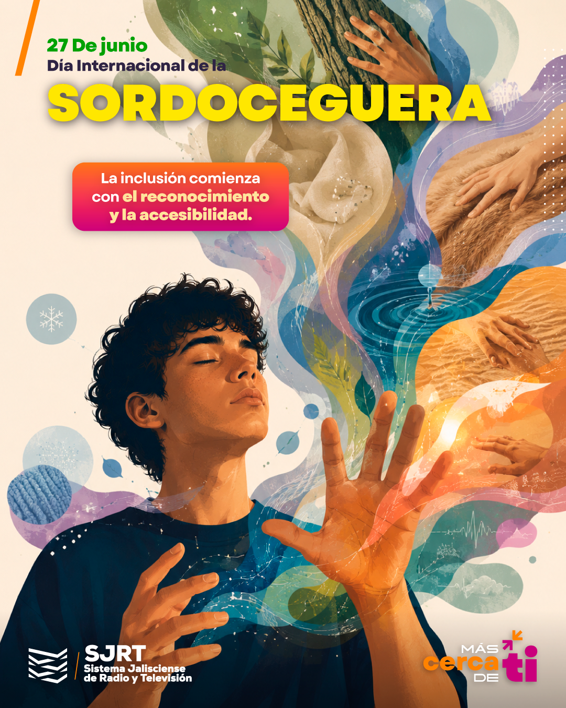

SJRT operates three simultaneous public channels, JaliscoTV, JaliscoRADIO and JaliscoNOTICIAS, each requiring daily on-brand visual content. I design commemorative cards, cultural graphics and campaign posts within strict brand guidelines, using Illustrator, Photoshop and scalable Canva template systems that let non-design staff publish on-brand content independently. Each piece moves from concept to publication within a single workday.
In summer 2025 I led design for a vertical social campaign announcing SJRT's summer programs, applying one typography, color and layout system across the full asset series and delivering it under a compressed production window. The role has strengthened my ability to produce at speed inside strict brand constraints, and reinforced template-based systems as a way to scale content output without scaling headcount.









